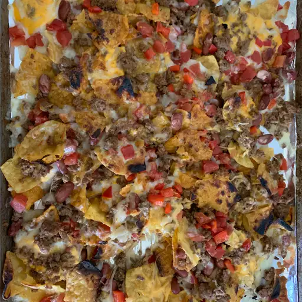

Nachos

Looks good, don't it!
Dam boi these nachos gonna blow yo dam brain off.
Ever wanted to know what it feels like to be American?
Look know further than this true blue American recipie.
Ingredients
- Mince
- Beans
- Onions
- Tomato
- Garlic
- Cheese..... American of course
- Nacho Chips
- Throw that dam mince in a pan with garlic and onion.... youll thank me later.
- Add beans and tomato, mix er up and let it stew (just like momma used to make).
- Turn on the oven, get her nice and hot.
- Lay them chips down like the law and spread with mince, cover with cheese and into the oven it goes.
- Get it nice and grilled till that cheese goes all sticky.
- What you waiting for, get in there.
- Serve with guacamole and sour cream.
- Sing American national anthem like you're Beyonce.